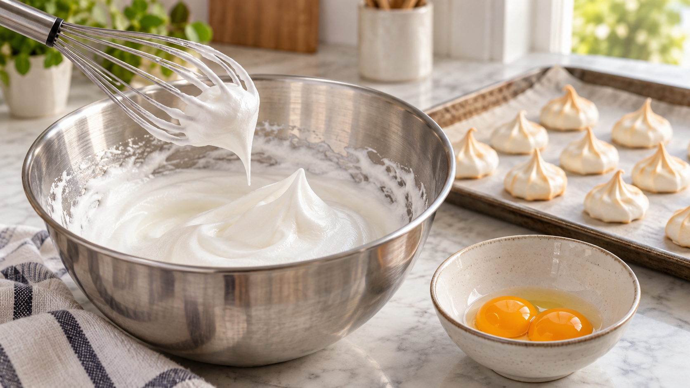

卵白へ油が混じると泡立ちにくい？｜卵黄と油は同じではない
メレンゲを作ろうと卵を割ったら、黄身が少し混じった。ボウルに油が残っていたかもしれない。もう泡立たないのだろうか。
結論から言うと、卵黄はできるだけ混ぜずに卵白を取り分けよう。ただし「油が少しでも入れば必ず失敗」という言い方は強すぎる。混じったものの種類と量で、泡への影響は変わる。
泡は、空気を包む薄い膜でできる
卵白を泡立てると、小さな空気の粒が次々に入る。卵白に含まれるたんぱく質は、空気と水の境目に集まり、粒を包む薄い膜を作る。泡が増えても膜がつながっていれば、ふんわりした形を保ちやすい。ここに別の成分が入り込むと、膜の作られ方や持ちこたえ方が変わる。これを界面での変化という。卵白と卵黄の成分を調べた研究でも、泡の量と安定性が変わる様子を確認している。
研究で確認されたこと
卵白に卵黄を加えた研究では、泡立つ量と速さが下がった。卵黄の成分を分けて調べると、主に油に近い成分が悪影響を与え、別の脂質成分では同じ低下が見られなかった。つまり「脂質ならすべて同じように泡を壊す」とは言えない。
さらに、日本の調理科学の研究発表では、少量の食用油を加えた卵白の泡は、加えない場合と大きな差が出ない条件があった。一方、卵黄が増えると良い泡を得るまでの時間が延び、焼いた菓子にも影響した。食用油より卵黄の影響が大きかったという結果だ。ただし研究で使った油、量、泡立て方が違えば、家庭での結果も変わり得る。
ここから家庭で使える考え方はシンプルだ。泡を大きく育てたい料理では、卵黄を分け、ボウルと泡立て器を洗って乾かしておく。油の跡が少しあっただけで、卵白を必ず捨てる必要があるとまでは言えない。
小さな焼きメレンゲを作る
材料は卵白2個分とグラニュー糖100g。オーブンを100℃に予熱し、天板にオーブンシートを敷く。
- 卵を一つずつ小鉢に割り、卵黄を崩さず卵白だけを、洗って乾かしたボウルへ移す。卵黄が入った卵白はこのメレンゲには使わず、別の十分に加熱する料理へ回す。
- 卵白を泡立て、白い泡が全体に広がったら砂糖を3回に分けて加える。つやが出て、泡立て器を上げると先端が立つまで続ける。
- 直径約3cmに小さく絞り、100℃で約90分焼く。表面だけで判断せず、一つ割って中心まで乾いていることを確かめる。湿っていれば追加で焼く。生の泡は味見しない。米国農務省は乾燥させたメレンゲ菓子を安全な調理例として示している。
別の料理にも使える判断
シフォンケーキやスフレでも、卵白の泡を生地のふくらみに使う。そんなときは、卵黄や油を加える工程より先に卵白を泡立てると考えれば迷いにくい。完成した泡をほかの材料へ混ぜる料理と、卵白そのものを泡立てる工程は分けて考えよう。これは泡の仕組みからの調理上の考察で、どのレシピでも同じ高さになるという保証ではない。
まとめ
卵白の泡は、空気を包むたんぱく質の膜で保たれる。卵黄の混入は泡立ちを弱めやすいが、少量の食用油の影響は条件次第だ。まずは卵を小鉢で一つずつ分け、きれいなボウルで泡立ててみよう。